Major Arcana
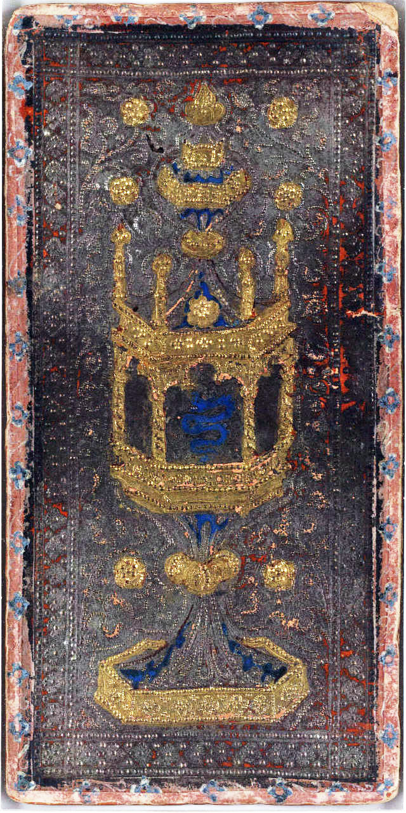
According to the tarot tradition, the 22 cards of the Major Arcana are emblems that embeds profound knowledge about the Future, the Present and the Past. In Sprezzatura each Major Arcana card alludes to certain tropes of Renaissance imagination and literature, inspiring the Host in setting up the current Scene.Each Major Arcana card provides temporary mechanics that will force the players to reconsider their interaction and strategies.
So far, we are not providing a fixed list of effects and rules for each Major Arcana. The powerful imaginative emblems encoded into this cards can inspire the Gathering in collaboratively set the tone of a given scene.
Here some suggestions of temporary mechanics that interacts with the core rules of Sprezzatura:
- Constraint Resonance Pool between players
- Exchange, reduce or increase cards in players' hands.
- Boost or flaw a certain Temperament for the Scene by changing rules about die value, intervals and Consonances. The same applies to Minor Arcana cards.
- Alters rules of Dissonance
- Force players to play their main character off-scene.
List of Major Arcanas
Cards from the Visconti-Sforza deck (15th century)
| Image | Tarot Card | Tropes | Mechanics |
|---|---|---|---|
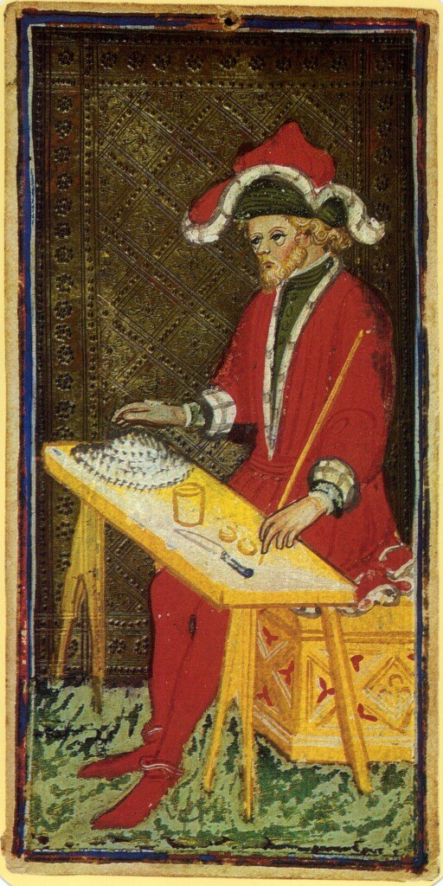 |
I The Magician | magic, deception, knowledge | Players are allowed to keep 4 cards in their hand. |
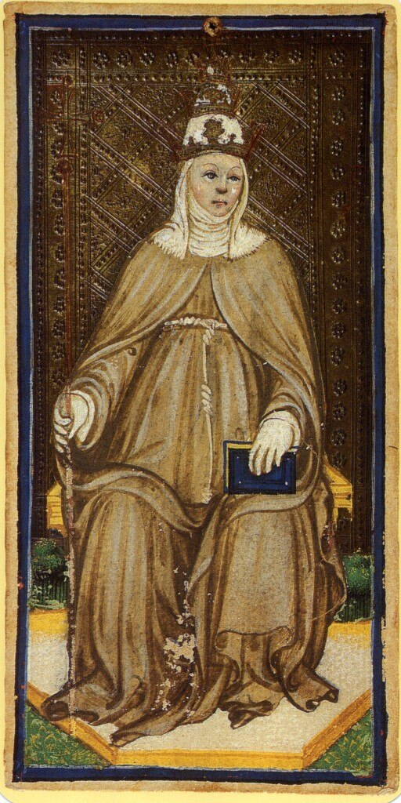 |
II The High Priestess | heroine, quarrel of the sexes, virtue | Every Female character may reduce their Failure dice by one, up to a minimum of one die. |
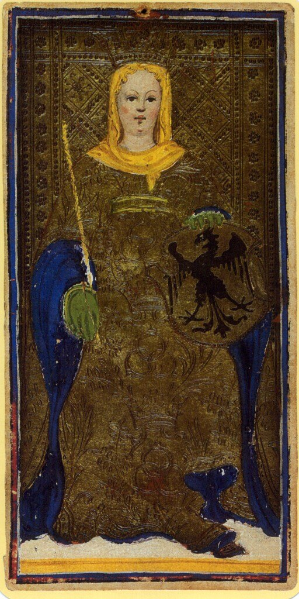 |
III The Empress | ||
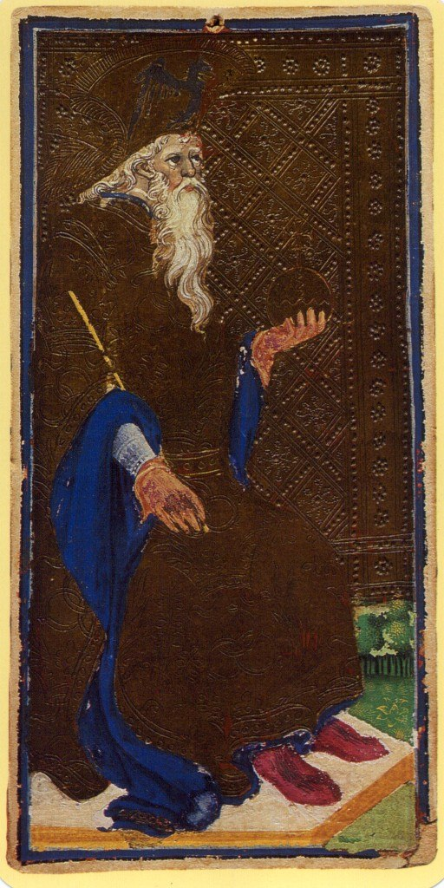 |
IIII The Emperor | ||
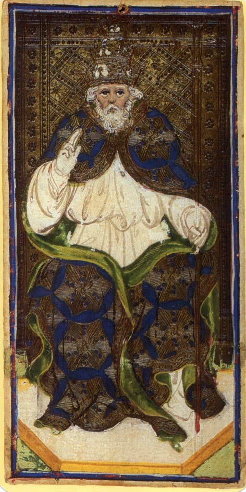 |
V The Hierophant | ||
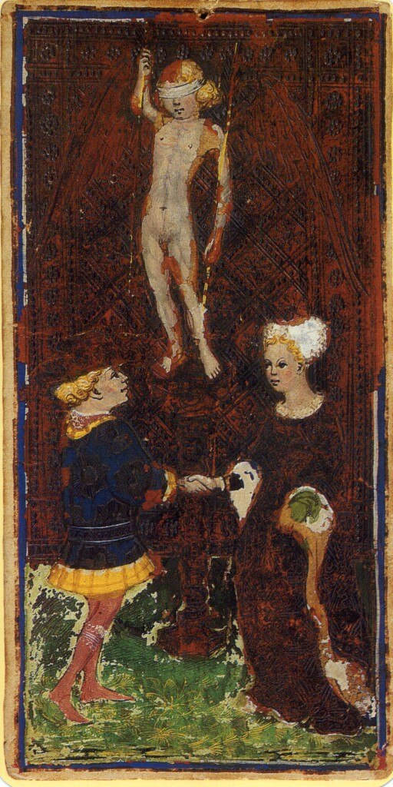 |
VI The Lovers | ||
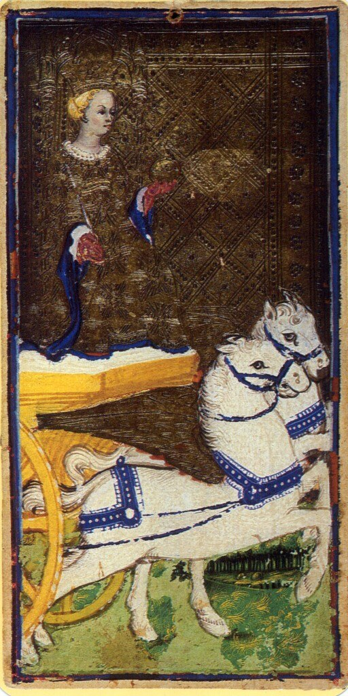 |
VII The Chariot | ||
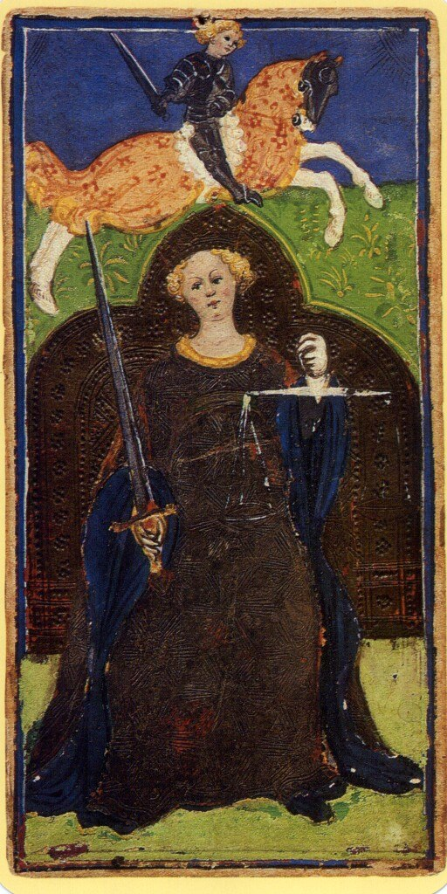 |
VIII The Justice | ||
| VIIII The Hermit | |||
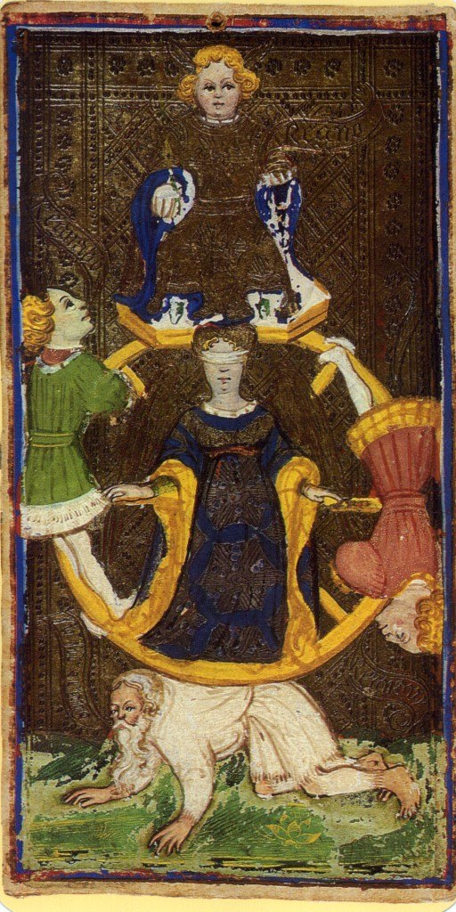 |
X The Wheel of Fortune | ||
| XI The Strength | |||
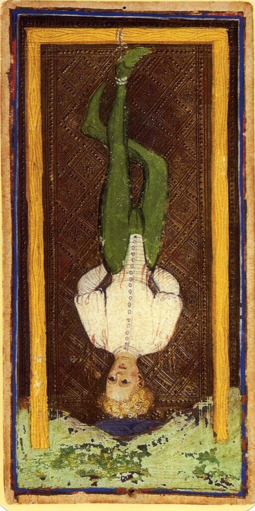 |
XII The Hanged Man | ||
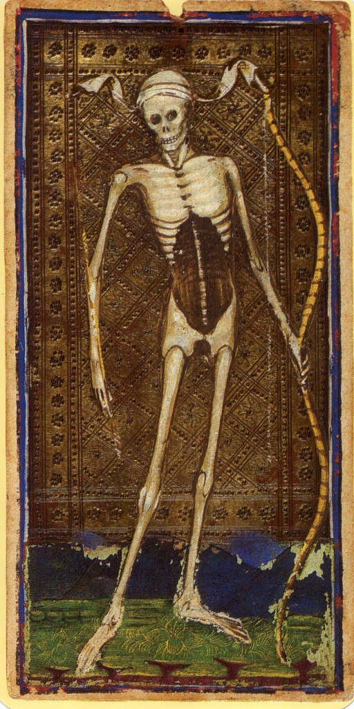 |
XIII The Death | ||
| XIIII The Temperance | |||
| Missing card | XV The Devil | ||
| Missing card | XVI The Tower | ||
| XVII The Star | |||
| XVIII The Moon | |||
| XVIIII Sun | |||
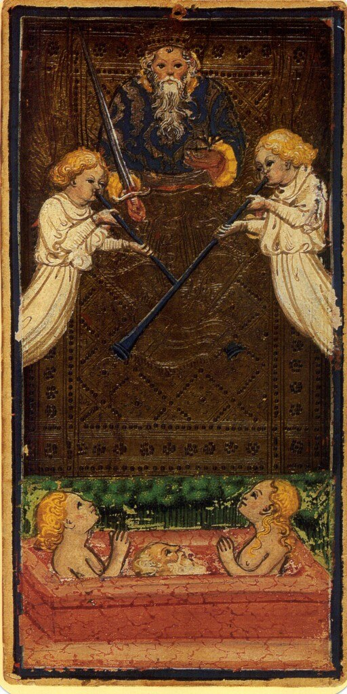 |
XX The Judgement | ||
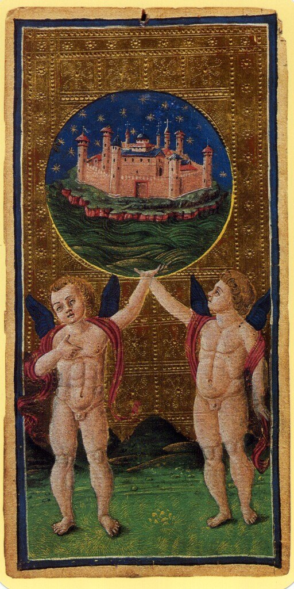 |
XXI The World | ||
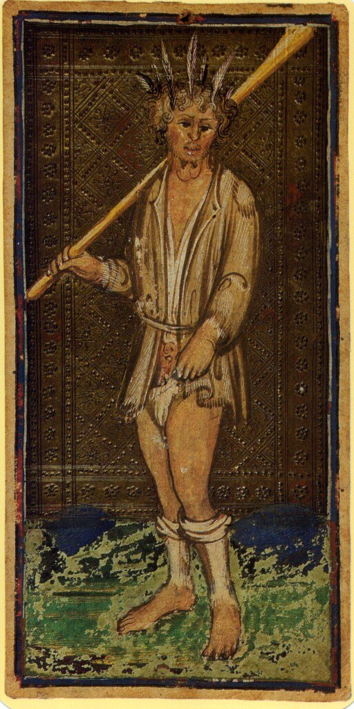 |
XXII The Fool |